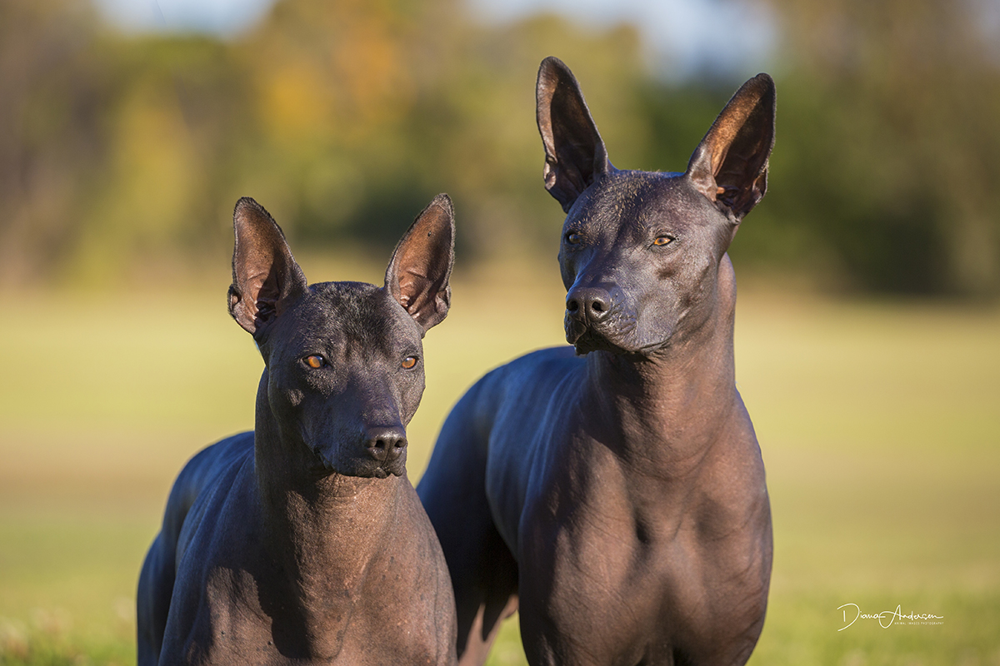

History
The dog breed Xoloitzcuintli is a hairless dog that originated from Mexico and Central and
South America over 3,000 years ago. The Xoloitzcuintli was part of the cultures of the Aztec
and Mayan civilizations. According to the National Geographic article, the Xoloitzcuintli
name is derived from two Aztec words; Xolotl and Itzcuintli. Xolotl is the Aztec god of
lightning and dead, while itzcuintli means dog. The Aztecs believed the Xoloitzcuintli was
created by the god Xolotl to guide the souls of the dead through the underworld. They were
frequently sacrificed along with their deceased owners to complete the trip through the underworld,
guiding them every step of the way. Although the Aztecs had religious beliefs in them they were
also being bred for their meat because they believed that it can heal them from their illnesses.
Unlike most dogs, this breed was a result of constant natural selection rather than human
manipulation; it’s considered a natural breed. Today the Xoloitzcuintli is a rare breed in
the United States, but remains common among Mexican households because of the long lasting
beliefs of healing powers that the Xoloitzcuintli carries.
Where breed was developed
These dogs were evolved in the jungle. They originate from Colima Mexico and were found in tombs of royalty,
specifically those of Colima, Mayan, Toltec, Zapoteca, and Aztec Indians. Unlike most dogs, this breed was a
result of constant natural selection rather than human manipulation; it’s considered a natural breed.
Where breed was developed
The Xoloitzcuintli was sacred in ancient Mexico where the dogs were sacrificed and placed in the graves of their
owners. In traditional Mexico believes, Xolos were thought to safely guide their owner’s souls to the land of
the dead. Besides, the Mayas believed that Xolos had healing power for various health conditions. This belief
still remains in the modern Mexico culture, as featured in the 2017 Disney animated film Coco with a Xoloitzcuintlu
named Dante.
Function of breed over time
From sacred dogs to watchdogs, the role that Xolos play in the society had changed over time. Nowadays, the Xolos
are no longer sacred dogs that people sacrificed but have become good watchdogs and family dogs. Xolos will speak up
and alert the owners if anyone comes to the house. They might be reserved with strangers but do not expect them to
scare off intruders as they are not usually aggressive.
AKC Group
Today, the xoloitzcuintli is included in the non-sporting group. This group is described by the AKC as being diverse in
overall appearance, size, coats, etc. The AKC considers these dogs hard to generalize as they can greatly vary in
appearance as well as personality. While they suggest many of these dogs can be good watch dogs as well as house dogs,
these roles can somewhat parallel to their original function. Originally meant for protecting and guiding the souls of
their owner to safety through the afterlife, the only quality the AKC didn’t consider was their athletic and hunting abilities.
Temperment
Typical Xolo personalities include being attentive with those to whom they’re familiar, but they can be protective and territorial
when introduced to new people or animals. Puppies can also be destructive. However, Xolos have a calm temperament when given
proper socialization and training. Although the Xoloitzcuintli is commonly known as the hairless dog, there are actually two
varieties to the breed - hairless and coated, according to the American Kennel Club. Other than the two skin varieties, the breed
also comes in three different size - toy, miniature and standard. The large variety was used for protection whereas the medium and
small versions were used as companions or to eat. The breed has not significantly changed over time.
Pop Culture
TThe Xolos have been represented in pop culture a few times. Today, when people think of Xolos, majority of them will think of Dante,
a character off of Pixar’s 2017 movie Coco. In this movie, Dante plays the role of a spirit guide for Miguelito through the underworld,
which is how they were viewed by the Aztecs. This film did a good job of portraying this breed, which is due to the fact that artists
working on this film interacted with dogs of this breed in order to study and observe them. They learned that Xoloitzcuintlis were very
energetic and loyal so they made Dante that way, as well as giving him the physical aspects of an average Xolo.
Lifestyle as companion Pet
Xolo skin is actually a hide – thick, protective and resistant to injury. They exude an oil that protects them from the sun and from
insects. However, it is recommended to apply sunscreen to their skin for added protection against the sun. They also require frequent
bathing, whereas coated Xolos require occasional brushing. Despite these differences, both the coated and hairless varieties have no
major health concerns besides acne and occasional patellar luxation. In terms of physical activity, this breed requires only moderate
exercise, a daily walk or jog is recommended. When it comes to behavior, Xolos can be attentive with people they’re familiar with;
however, it’s important to be cautious of their interactions with strangers and other animals as they tend to also be protective and
territorial. Xolo puppies tend to be destructive; however, this breed is sensitive and smart, meaning gentle positive, training is the
best method for these puppies. Proper training of these dogs requires consistency and structure.
Fun Facts
- Xoloitzcuintlis are the national dog of Mexico.
- Frida Kahlo and Diego Rivera from the movie Coco were owners of Xoloitzcuintlis
- Christopher Columbus wrote about Xolos in his journal and described them as “strange, hairless dogs”
- Xolos were believed to have mystical powers and healing abilities in Mexico.
With and Without Hair

The Gang Is All Together

The Other Gang
Baby Xolo

Miniature Xolo

Size Differnces

Majestic Adult Xolo

Mom And Her Baby

Fearless Xolo

Frida Khalo And Her Xolo's

Looking After Each Other

Not Always One Solid Color
Dante From The Movie Coco

Sources
Kriss, R. (2017, November 6). Xoloitzcuintli Dog Breed Information. Retrieved from https://www.akc.org/dog-breeds/xoloitzcuintli/
Taran, S., & Metropolitan Museum of Art. (2017, November 22). This Hairless Mexican Dog Has a Storied, Ancient Past. Retrieved from https://www.nationalgeographic.com/news/2017/11/hairless-dog-mexico-xolo-xoloitzcuintli-Aztec/.
Xoloitzcuintli Dog Breed Information, Pictures, Characteristics & Facts. Retrieved from https://dogtime.com/dog-breeds/xoloitzuintli#/slide/1.
Xoloitzcuintli / Mexican Hairless. (n.d.). Retrieved from https://www.petfinder.com/dog-breeds/xoloitzcuintli-mexican-hairless/.
Lawson, K. (9 July 2019). ALL ABOUT XOLOITZCUINTLI: THE MEXICAN HAIRLESS DOG. ALL ABOUT XOLOITZCUINTLI: THE MEXICAN HAIRLESS DOG. Retrieved from www.youtube.com/watch?v=0Vk5iKiOd8w.
Xoloitzcuintli Club of America . (2013). Retrieved from http://www.xoloitzcuintliclubofamerica.org/about_xolos.
Nat Geo WILD. (2017, November 29). This Ugly-Cute Hairless Dog Has a Surprising History I Nat Geo Wild. Retrieved from https://www.youtube.com/watch?v=F7oJ66knlg0